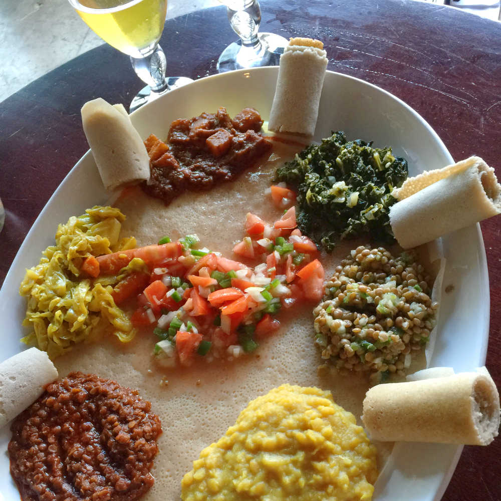

Chinatown is the artsy, cool, and shady part of town. You'll find some of the funkiest restaurants in the state next to karaoke dive bars.
If you're driving, you might get lucky and find street parking, which is free after 6:00. Mark's Garage is always an option at $8 for the night. Chinatown Municipal Parking is a cheap and convenient option too. Note that the strategy is to park somewhere and walk. If you're not driving, a cab ride from Ala Moana Center to Chinatown runs about $10.
On this trip to Chinatown, we decided to try the Ethiopian Love Restaurant and made reservations for 5:00. This probably wasn't necessary since it was empty when we arrived. When we left around 7:00, however, it was packed and there was a wait.
Inside the ambiance was warm and inviting. Outdoor seating was unavailable during our visit because actor Zac Efron and crew were preparing to film a movie in the courtyard. There was some last minute shuffling of tables and chairs by the staff. Despite this, they were helpful and easygoing thought a bit winded.
The menu at The Ethiopian Love Restaurant includes beef, lamb, and chicken dishes. Nevertheless, the restaurant is a great option for vegans and vegetarians. For an appetizer, we ordered Lentil Sambussa.

For the main course, the waiter recommended the Ethiopian Love Veggie Sampler for Two. We added the Timatam Salad. There are no utensils. You eat by tearing off pieces of injera bread and scooping lentils, peas, cabbage, kale, potatoes, and other spiced items. Everything we tried was delicious. Note that the restaurant is BYOB with a $3 corkage fee per person so you'll need to bring your own beer or wine. Plan ahead or stop at a nearby corner store. Our bill was $55 before tip.
After dinner we walked to Bar 35. They have a huge beer selection. If you're hungry, they offer unique twists on typical bar foods such as pizza and fries. We watched The Symths, a The Smiths cover band, do a sound check. On any given night, you can expect to see a band, DJ, or a least a movie playing on the wall. We've heard of Match.com meet-ups happening here too. If there's room, check out the courtyard in back. A couple of beers each cost us $20 before tip.